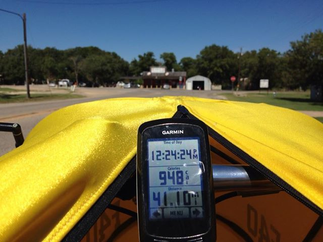
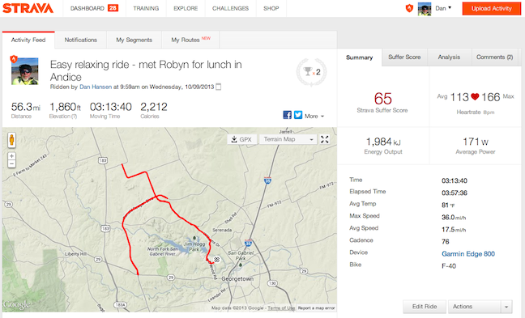

F-40 Easy ride to Andice for lunch w/Robyn
10 Oct 2013
Finally, a ride with the F-40 where I just relax and enjoy the countryside.
I arranged to met my wife Robyn for lunch at Andice and then just took off mid-morning to ride easy and planned on arriving in Andice at 12:30 pm.
About 8 miles into the ride the winds really kick up to 12 mph gusting to 16 mph. Really not too bad until I turned south on Ronald Reagan Blvd and then it was a nasty crosswind. Almost gave up and turned around to head home. But I decided it would be a good day for wind practice on the F-40. So, I slowed the bike down to under 20 mph and just basically sailed with the wind - that is, allowing any quartering wind to push me forward (tacking) using the wheels contacting the ground as the keel.
I just rode around the countryside until arriving in Andice just in time for lunch with Robyn - a little over 41 miles before lunch.

After a too big lunch of a green chile cheese burger it was a much slower ride home - 15 miles directly into a 12 mph headwind.
Overall, just a really nice day. 56.3 miles @ 17.5 mph.
 http://app.strava.com/activities/88033278